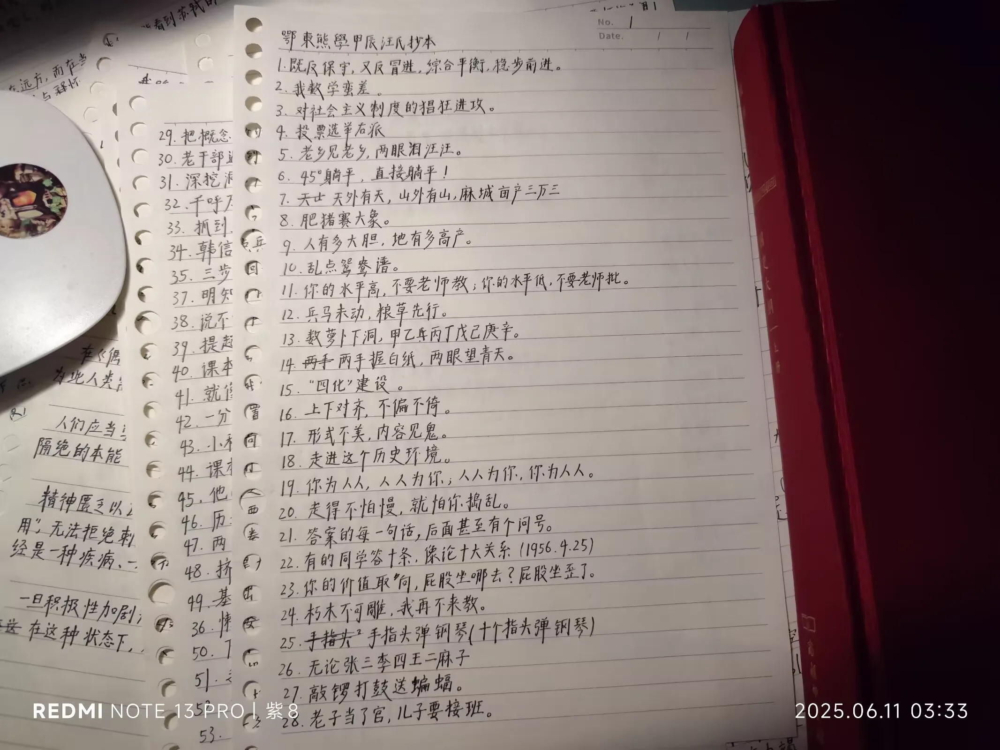
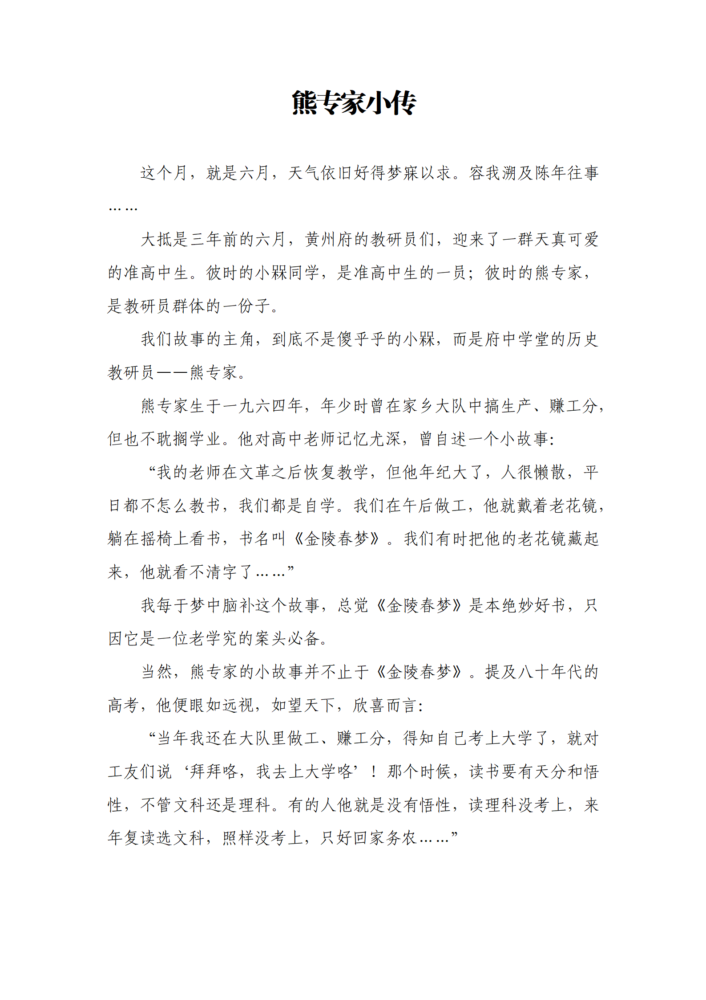
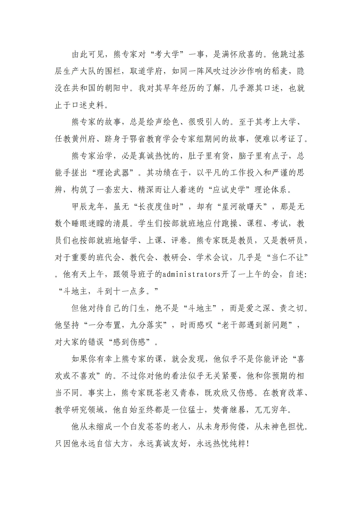
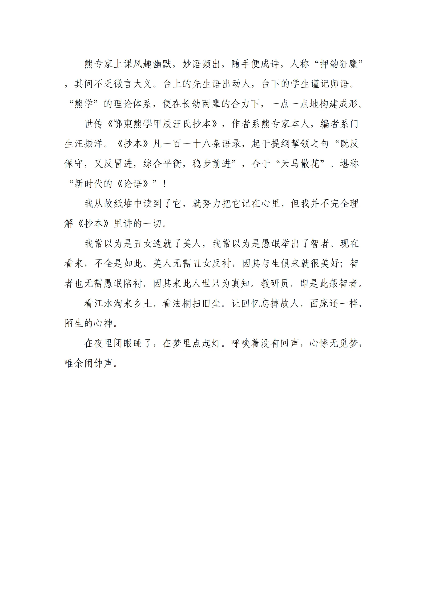
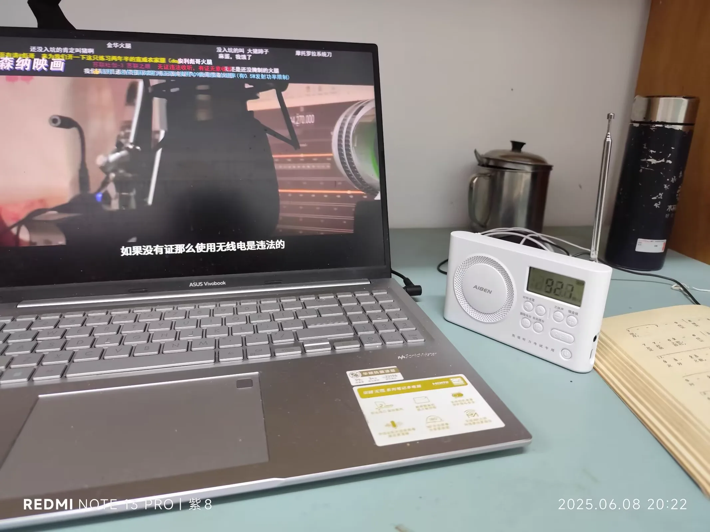
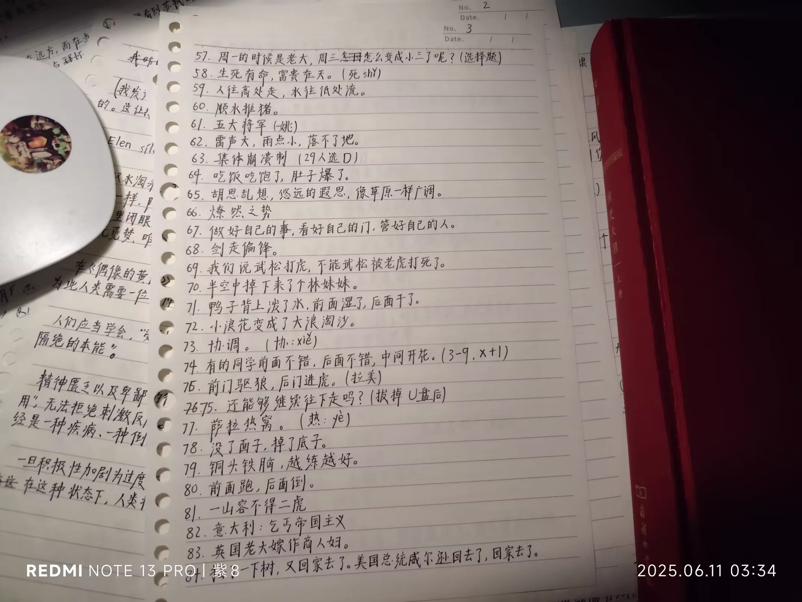
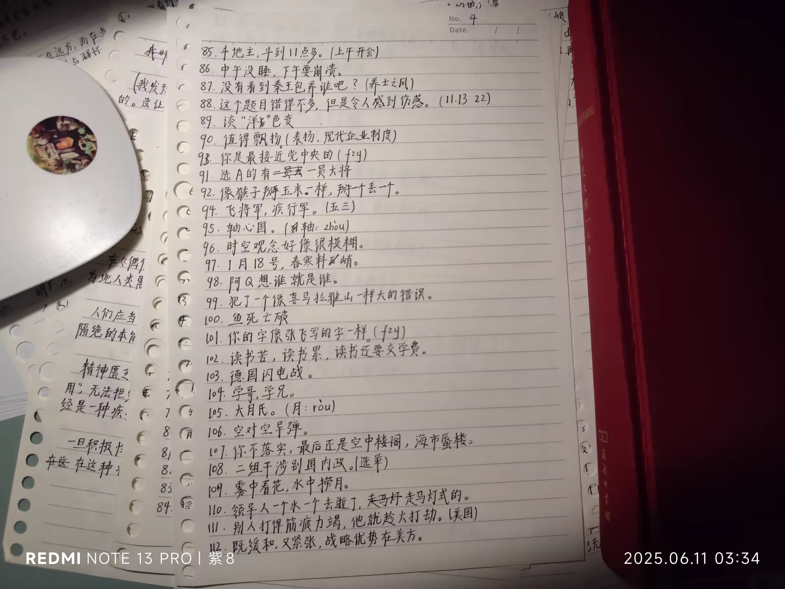
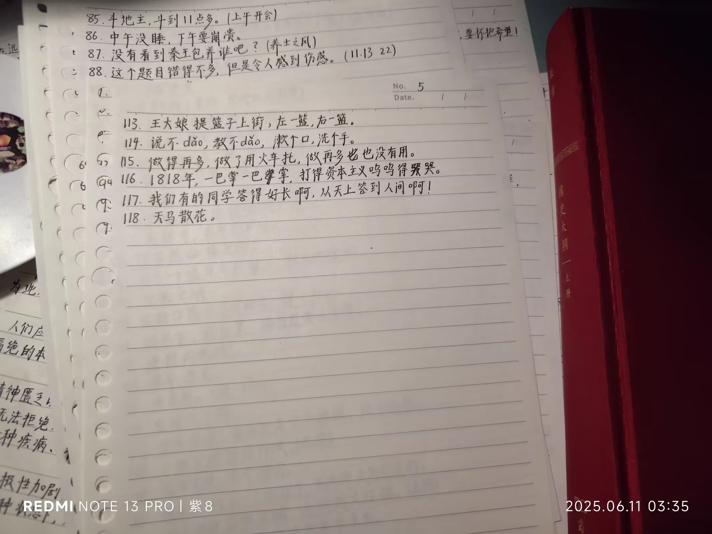

Journal · 2025-06-11
湖北省武汉市
2025年6月11日 09:31
世传《鄂東熊學甲辰汪氏抄本》，作者系熊专家本人，编者系门生汪振洋。《抄本》凡一百一十八条语录，起于提纲挈领之句“既反保守，又反冒进，综合平衡，稳步前进”，合于“天马散花”。堪称“新时代的《论语》”！
我从故纸堆中读到了它，就努力把它记在心里，但我并不完全理解《抄本》里讲的一切。
柴江赣北 : 熊专家的故事是开源故事，人民群众喜闻乐见；但《鄂東熊學甲辰汪氏抄本》《熊专家小传》，是有版权的！转载、引用、打印，须注明出处
2025年6月11日 09:37
柴江赣北 : 小企鹅真是磨人啊！我真不知道《熊专家小传》哪个字违禁了，原文放在说说中，发一次就屏蔽一次
2025年6月11日 09:43
柴江赣北 : 笔者用大号发布一遍，再切换小号查看一遍；小企鹅屏蔽一次，笔者就再修改、发布一次。所幸成功发布。南山可移，此案必不可改！
2025年6月11日 09:56









Jun 11, 2025 09:31
It is handed down that the Eastern Hubei Xiong Studies Jiachen Wang Transcript, authored by Expert Xiong himself and compiled by his disciple Wang Zhenyang, contains one hundred and eighteen sayings in total. It opens with the pithy line "Oppose both conservatism and reckless advance, seek overall balance, and move forward steadily," and ends with "the heavenly horse scattering flowers." It can truly be called "the Analects of the new era"!
I read it among the old papers and tried hard to commit it to memory, but I don't fully understand everything the Transcript says.
柴江赣北 : Expert Xiong's stories are open-source stories that the masses love to hear; but the Eastern Hubei Xiong Studies Jiachen Wang Transcript and A Brief Biography of Expert Xiong are copyrighted! Any reprinting, quotation, or printing must cite the source
Jun 11, 2025 09:37
柴江赣北 : The little penguin is really a torment! I really don't know which word in A Brief Biography of Expert Xiong is forbidden. I put the original text in my post, and every time I post it gets blocked
Jun 11, 2025 09:43
柴江赣北 : I posted once with my main account, then switched to my alt account to check. Every time the little penguin blocked it, I revised and reposted. Fortunately it was published successfully. The Southern Mountain may be moved, but this case shall never be altered!
Jun 11, 2025 09:56
11 juin 2025 09:31
On raconte que le « Manuscrit Wang de l'an jiachen des Études Xiong du Hubei oriental », rédigé par l'expert Xiong lui-même et compilé par son disciple Wang Zhenyang, contient au total cent dix-huit maximes. Il s'ouvre sur la formule synthétique « Ni conservatisme ni excès, équilibre d'ensemble et progression sûre » et se clôt sur « le cheval céleste semant des fleurs ». On peut vraiment l'appeler « les Entretiens de la nouvelle ère » !
Je l'ai lu parmi de vieux papiers et me suis efforcé de le graver dans ma mémoire, mais je ne comprends pas entièrement tout ce que dit le Manuscrit.
柴江赣北 : Les histoires de l'expert Xiong sont des histoires open source que le peuple aime à entendre ; mais le « Manuscrit Wang de l'an jiachen des Études Xiong du Hubei oriental » et la « Brève biographie de l'expert Xiong » sont protégés par le droit d'auteur ! Toute republication, citation ou impression doit en indiquer la source
11 juin 2025 09:37
柴江赣北 : Le petit pingouin est vraiment agaçant ! Je ne sais vraiment pas quel mot de la « Brève biographie de l'expert Xiong » est interdit. J'ai mis le texte original dans ma publication, et chaque publication est bloquée
11 juin 2025 09:43
柴江赣北 : J'ai publié une fois avec mon compte principal, puis j'ai basculé sur mon compte secondaire pour vérifier. Chaque fois que le petit pingouin bloquait, je modifiais et republiais. Heureusement, la publication a réussi. On peut déplacer la Montagne du Sud, mais jamais modifier cette affaire !
11 juin 2025 09:56
11.06.2025 09:31
Es heißt, das "Wang-Manuskript des Jahres Jiachen der Xiong-Studien aus Ost-Hubei", verfasst vom Experten Xiong selbst und zusammengestellt von seinem Schüler Wang Zhenyang, enthalte insgesamt einhundertachtzehn Aussprüche. Es beginnt mit dem prägnanten Satz "Weder Konservatismus noch Übereifer, umfassendes Gleichgewicht und sicheres Voranschreiten" und endet mit "das himmlische Pferd streut Blumen". Man kann es wahrhaftig die "Gespräche der neuen Ära" nennen!
Ich las es unter den alten Papieren und bemühte mich, es mir einzuprägen, doch ich verstehe nicht alles, was im Manuskript steht.
柴江赣北 : Die Geschichten von Experte Xiong sind offene Geschichten, die das Volk gern hört; doch das "Wang-Manuskript des Jahres Jiachen der Xiong-Studien aus Ost-Hubei" und die "Kurze Biographie des Experten Xiong" sind urheberrechtlich geschützt! Jeder Nachdruck, jedes Zitat und jeder Ausdruck muss die Quelle angeben
11.06.2025 09:37
柴江赣北 : Der kleine Pinguin ist wirklich quälend! Ich weiß wirklich nicht, welches Wort in der "Kurzen Biographie des Experten Xiong" verboten ist. Ich habe den Originaltext in meinen Beitrag gesetzt, und jedes Mal wird er gesperrt
11.06.2025 09:43
柴江赣北 : Ich postete einmal mit meinem Hauptkonto und wechselte dann zu meinem Zweitkonto, um nachzusehen. Jedes Mal, wenn der kleine Pinguin sperrte, überarbeitete ich und postete erneut. Glücklicherweise gelang die Veröffentlichung. Der Südberg mag versetzt werden, aber dieser Fall darf niemals geändert werden!
11.06.2025 09:56